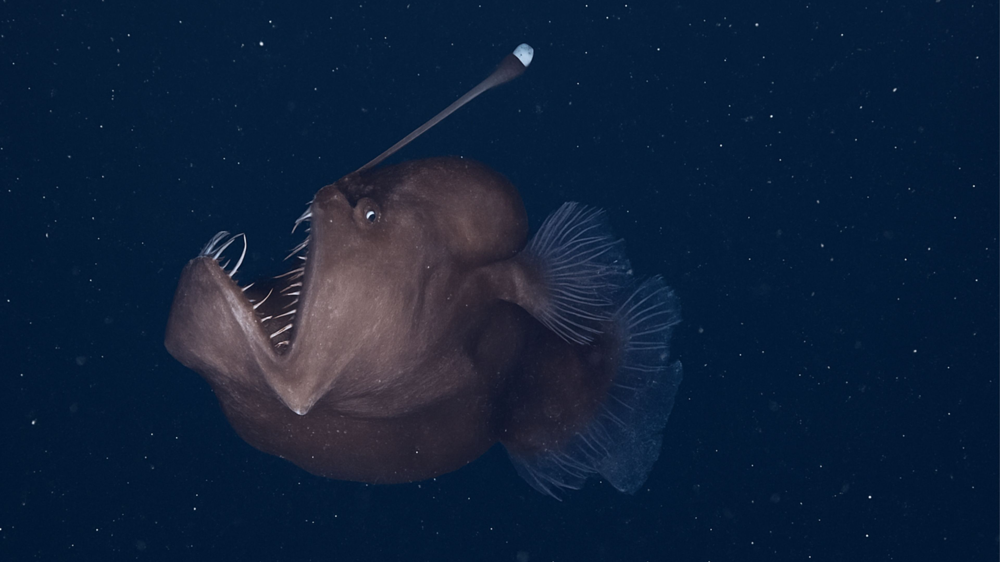
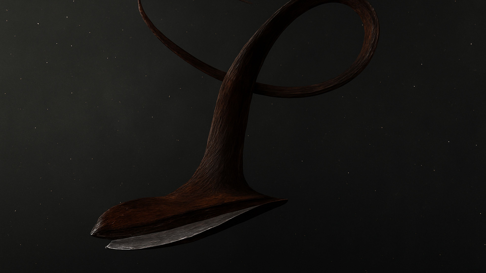
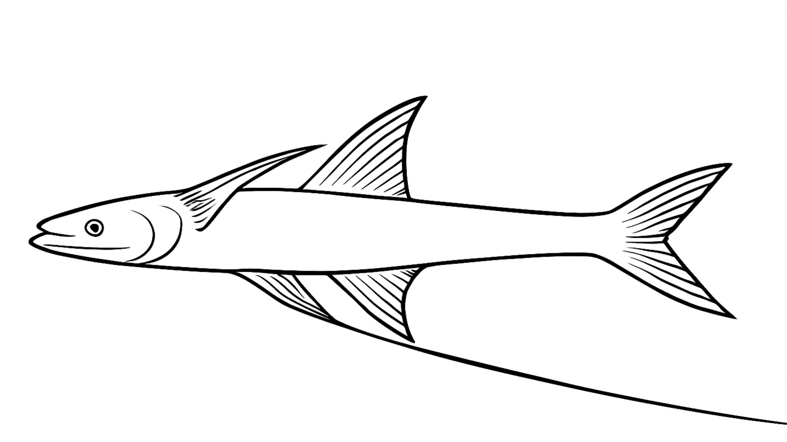

The ocean's midnight zone (1,000-4,000m), also called the bathypelagic zone, plunges into complete darkness sunlight never reaches and pressure crushes like 400 atmospheres. Anglerfish rule with glowing lures dangling over massive jaws, patiently waiting for prey in the cold 2°C waters. And gulper eels expand their transparent bellies to swallow fish larger than themselves.



Giant squid, sperm whales on deep dives, and bizarre tripod fish (perched on elongated fins) survive on marine snow—organic scraps raining from above. Strange comb jellies pulse rainbow light, and rare Greenland sharks (400+ years old) patrol silently. vast zone covers 90% of the ocean volume yet holds sparse, highly-adapted life feeding the entire deep sea ecosystem.